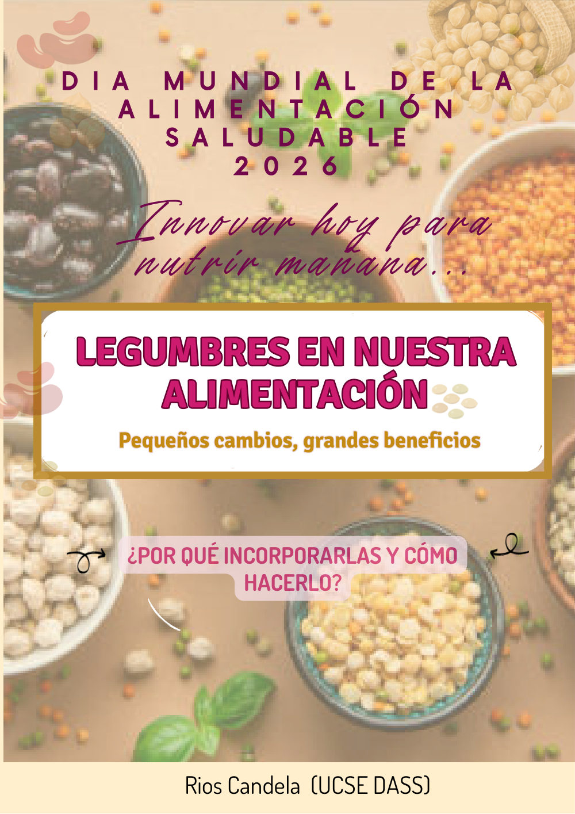
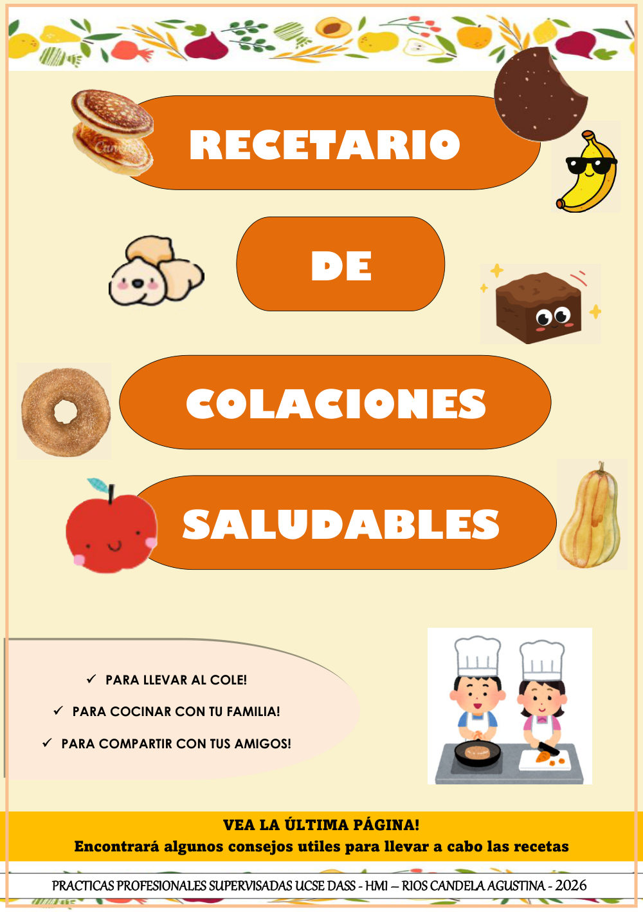
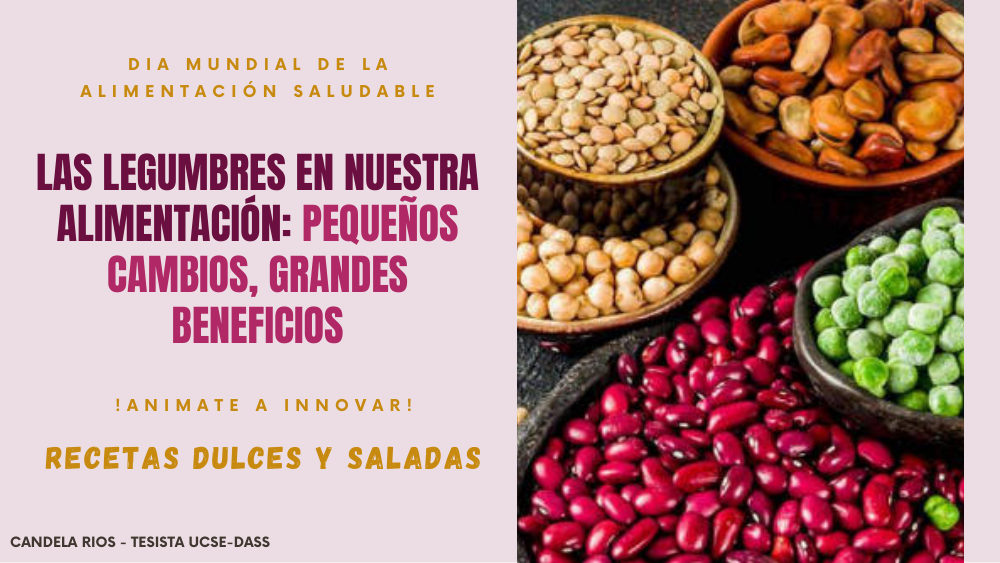

Legumbres en nuestra alimentación
¿Por qué incorporarlas y cómo hacerlo? Remojo, cocción, antinutrientes, aquafaba y todos los beneficios de estos pequeños grandes aliados.

Guías y recetarios gratuitos para mejorar la alimentación de toda la familia: recetas prácticas, ingredientes accesibles y fundamentos claros, sin vueltas.
Todos los recursos son de descarga libre: no hace falta registrarse ni dejar datos personales.
Entre tanta información contradictoria sobre alimentación, lo que más falta hace es claridad. NutriBienestar propone volver a lo simple: recetas reales, ingredientes de almacén y fundamentos entendibles.
PDF listos para descargar, ver en el celular o imprimir y pegar en la heladera.
Fundamentos de nutrición explicados simple: qué comer, por qué y cómo prepararlo.
Recetas con legumbres, frutas y alimentos económicos que conseguís en cualquier lado.
Opciones pensadas para cocinar en familia y que los chicos también disfruten.
Sin registros, sin apps, sin vueltas.
Explorá las guías y recetarios disponibles y elegí el que más te sirva: cada uno indica de qué trata y cuántas páginas tiene.
Cada recurso se descarga gratis con un clic, listo para verlo en el celu, la compu o imprimirlo.
Poné en práctica las recetas, cociná con tu familia y compartí el material con quien quieras.
Todas las publicaciones de la comunidad, en un solo lugar.

¿Por qué incorporarlas y cómo hacerlo? Remojo, cocción, antinutrientes, aquafaba y todos los beneficios de estos pequeños grandes aliados.
Galletitas de choco-garbanzo, donitas de manzana, cubitos helados de banana, aguas saborizadas y una guía de NutriConsejos.

Galletas de lenteja y chocolate, cuadrados húmedos de porotos negros, grisines de garbanzo y pizza de lenteja. ¡Animate a innovar!
Nuevos recursos próximamente
Sí. Todas las guías y recetarios son de descarga libre y gratuita: no hace falta registrarse, dejar el correo ni pagar nada.
Sí, compartilos libremente: están pensados para difundir alimentación saludable. Solo se agradece mencionar la autoría del material.
Varias sí: las legumbres, por ejemplo, no contienen TACC. Igualmente, cada receta indica sus ingredientes para que puedas verificar las que se adapten a tu necesidad.
No. Las recetas usan ingredientes de almacén y opciones económicas y rendidoras, como legumbres, avena, huevos y frutas de estación.
Todo el material es desarrollado por Candela Agustina Rios, en el marco de sus Prácticas Profesionales Supervisadas de la UCSE-DASS en el HMI.
Sí. Se siguen sumando recetarios y guías, y próximamente habrá un espacio de comunidad para compartir recetas y resolver consultas.